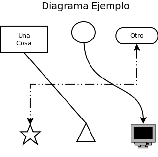

Diagramas
Sometimes you need to create a graphic
that is based on function, and how it looks isn't as important.
Some
examples of this might be a chart of an organization's structure or the
work flow of a project. For these, special diagramming software
is
available that is more suited to the task than a Vector diagram or
print layout program. Two example of these functional diagram
programs
are Dia (free, open source) and Microsoft's Visio.
The basics of all diagram editors are shapes, connector lines, and
text. Some typical shapes are rectangles, circles, ovals, and
triangles. There can also be more complicated shapes, such as one
that looks like a computer or like a house. There are also
several types of connecting lines. The simplest one can be a
plain line, or it can have arrows at one or both ends. Lines also
have different ways they can be connected between the shapes, they can
go strait to the destination, they can curve, or they can be routed so
that they only go up-do and left-right with only 90 degree turns, they
can also be some combinations thereof. Finally there is text, you
can put text within a shape, or elsewhere on the diagram.

An example orginizational chart.

An example flow chart.

In addition to these options, there are several diagram packages out
there that allow for creating specialized types of diagrams like
software modeling and network organization. These packages have
special shapes and connectors, often ones that will only connect in
certain ways. They are generally tools specifically for use with
that skill so we won't cover any of them here.
Dia
Dia is a basic diagram creator. The above example diagrams were
made with it.
Here's a screenshot of it in action.

The toolbox is on the left side of the screen, there are a few
important things to note in there. There are four rows of buttons
on the top. The buttons in red are used to transform the image,
the first button, that looks like an arrow, is used to select and move
objects (just like it was in Inkscape). The tool immediately to
its right that looks like a very tall capital 'I', is the text edit
tool. When you have this tool selected and click on a shape, you
can then type and the text will show up inside the shape. You can
also use this to edit existing text within a shape. The tool in
that row all the way to the right, that looks like a capital 'T' is the
text tool. This tool allows you to put text anywhere you want on
the page.
The buttons in the green area are used for creating connectors between
different shapes. The first one, by itself on the third row, is
the strait line connector. It will go directly from whichever
shape you start at to the shape you end at. The next one of
interest is the second one in on the next row. It is the
connector that gives you square lines with 90 degree turns. The
last one in the green area is our familiar bezier line creator, it
works just like in Inkscape where there are handles for the endpoints
that determine how much the line curves. Once you have put a line
in the diagram, you can change things such as its color, thickness, or
the arrows on the ends by double clicking on it.
Below the buttons is the area for the symbols. There are many
different sets of symbols included in Dia, in this case we have the
"Flowchart" symbols selected. You can change the set by clicking
the dropdown box for the symbols.

Once you have a shape selected, simply go over to the diagram window
and click one spot to start it at the upper left corner of where you
want it, then drag the mouse down and to the right until the shape is
the correct size. You should be immediately able to type text in
it if you desire. Once you have two shapes in the drawing, you
can then use the connectors between them. Just like lines, you
can change the properties of a shape (line color, fill color, text
size, etc) by double clicking on it.
Exercise
Use Dia to re-create the example flow-chart.